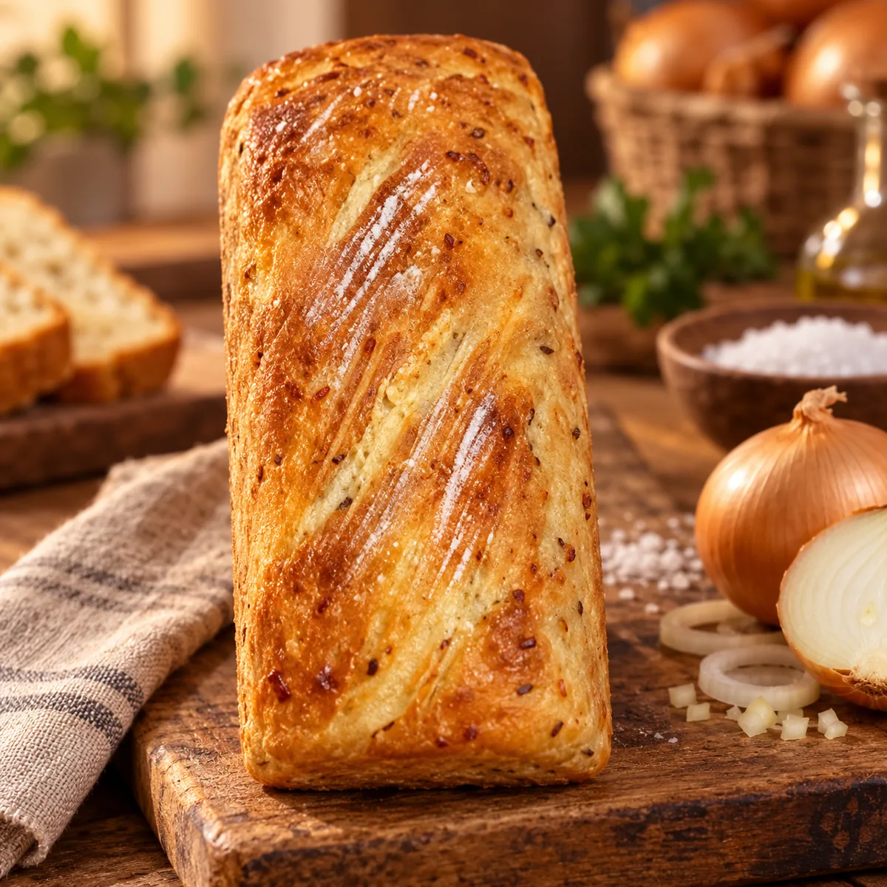

Pão Caseiro de Sal e Cebola
Pão caseiro de sal e cebola, preparado artesanalmente. Produção nos finais de semana ou por encomenda.
DisponibilidadeFinais de semana ou por encomenda
a partir deR$ 15,00
Verificando horário de Brasília…
A disponibilidade, retirada, entrega e eventual taxa são confirmadas diretamente pelo atendimento no WhatsApp.